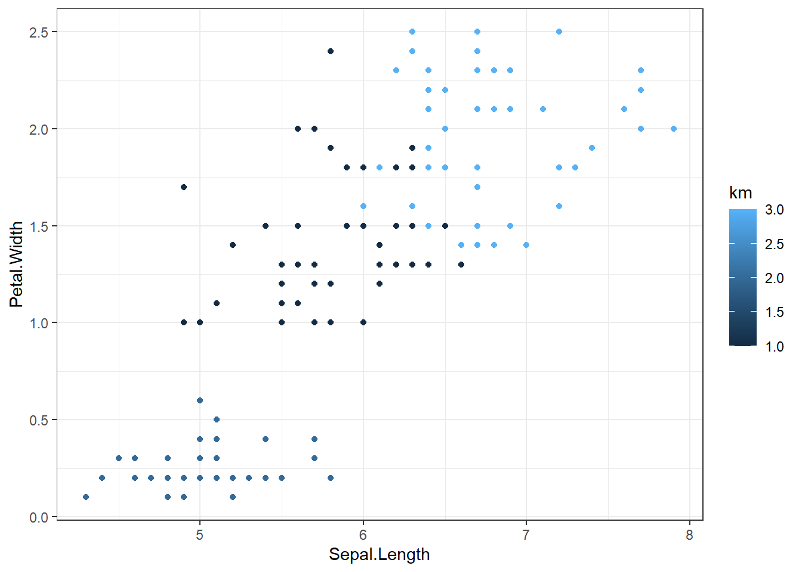

# Création des données et centrage réduction
df <- data.frame(Taille = c(168, 158, 177, 193, 178, 160, 180, 175, 189, 182),
Pointure = c(41, 37, 42, 45, 41, 37, 42, 39, 44, 45))
dfcr <- as.data.frame(scale(df))
# Boucle définition du nombre de K
nbg <- 1:9
difintra <- 1:9
for (ii in 1:max(nbg)) {
tmp <- kmeans(dfcr, centers = ii)
difintra[ii] <- tmp$betweens
}
plot(nbg, difintra/tmp$totss*100, type = "h")Classification non supervisée
Objectifs
Les démarches de classification visent à décrire des ensembles de grande dimension. La classification non-supervisée consiste à répartir en classes, en catégories, des objets ayant des caractères communs afin notamment d’en faciliter l’étude.
En fonction du nombre d’individus, le nombre de combinaisons possibles devient vite grand. Il faut donc une solution pour rechercher les partitions optimales. Différentes méthodes peuvent être mises en oeuvre :
Le partitionnement non-hiérarchique (k-means)
Le partitionnement hiérarchique qui regroupe (méthode ascendante) puis divise (méthode descendante) les individus de manière séquentielle (CAH et CDH)
Une méthode basée sur la densité des points (DBSCAN)
Les méthodes probabilistes basées sur des modèles de mélange de lois (EM, SEM, …)
Quelle que soit la méthode, il faut définir :
Une mesure de dissimilarité ou similarité entre les individus. Il s'agit ainsi de faire en sorte que les individus soient les plus similaires possibles dans un groupe (variabilité intra-classe faible).
Une mesure de l'homogénéité des groupes et la différence entre les différents groupes. Il s'agit ainsi de faire en sorte que les groupes soient les plus différents entre eux (variabilité inter-classe grande).
Inertie (notion de variabilité) : distance au carré de tous les points à la moyenne du groupe. Dans le cadre d'une démarche de classification, l'inertie totale est égale à la somme entre la variabilité inter-classe et de la variabilité intra-classe, donc minimiser un des paramètres revient à maximiser l'autre. Le ratio inertie inter / inertie totale est compris entre 0 et 1, plus il est proche de 1, plus les individus au sein des classes sont homogènes et les classes différentes.
Attention : avant de réaliser toute classification, il faut centrer-réduire les données. Les données utilisées ne peuvent, en outre, n'être que quantitatives. Si des variables qualitatives doivent être incluses, nous pouvons récupérer leurs coordonnées sur les principaux plans factoriels après avoir réalisé une AFC.
K-means
Présentation générale
Le sujet d'une classification est ainsi, à K fixé (c'est-à-dire le nombre de groupes), de minimiser l'inertie intra-classes, donc rendre les classes les plus homogènes possibles, et de maximiser l'inertie inter-classes, donc séparer le plus possible les classes entre elles. La qualité d'un clustering peut être évaluée par le rapport : Inertieinter / inertietotale. C'est l'objectif visé par la méthode des k-means.
Pour appliquer la méthode des k-means, il faut choisir :
Le nombre de groupes K. Il peut être fait :
En fonction d'une connaissance a priori de la base
A la suite d'une CAH
Selon un critère ad-hoc : « coude » dans la représentation graphique de l'inertie intra-classes.
Pour ce faire, on peut utiliser la boucle suivante :
La distance entre vecteurs (qui est la distance euclidienne)
Le représentant de chaque groupe (moyenne du groupe)
Le point de départ de l'algorithme
Dans RStudio, mettre en œuvre la méthode se fait de la façon suivante :
data(iris)
iris_cr <- scale(iris[1:4])
km <- kmeans(x = iris_cr, centers = 3)
iris$km <- km$cluster
iris %>%
ggplot(aes(Sepal.Length, Petal.Width, col = km)) +
geom_point() +
theme_bw()
Modalités de mise en oeuvre
- Import et sélection des données à utiliser. Les variables doivent être quantitatives. Si les variables sont qualitatives, on peut récupérer les coordonnées à la suite d’une analyse factorielle.
- Centrer-réduire les données
- Construire la partition (via la fonction kmeans)
- Caractériser les classes. Construire des classes n’a de sens que si on est capables de comprendre les logiques qui ont poussé au rapprochement entre les individus. Plusieurs indices peuvent être utilisés :
L’étude du parangon (individu moyen, individu le plus proche du centre de la classe) de chaque variable)
Etudier les variables qui caractérisent le mieux la partition. On peut considérer la partition comme une variable qualitative (avec autant de modalités que de classes). Pour chaque variable quantitative, on construit un modèle d’analyse de variance et on trie les variables par probabilités critiques croissantes.
library(FactoMineR)
iris$km <- as.factor(iris$km)
catdes(iris, num.var = 6)
Link between the cluster variable and the categorical variables (chi-square test)
=================================================================================
p.value df
Species 1.707502e-39 4
Description of each cluster by the categories
=============================================
$`1`
Cla/Mod Mod/Cla Global p.value v.test
Species=virginica 72 76.59574 33.33333 6.526248e-14 7.497065
Species=setosa 0 0.00000 33.33333 3.783976e-11 -6.612299
$`2`
Cla/Mod Mod/Cla Global p.value v.test
Species=setosa 100 100 33.33333 4.968040e-41 13.414570
Species=virginica 0 0 33.33333 5.012323e-12 -6.905227
Species=versicolor 0 0 33.33333 5.012323e-12 -6.905227
$`3`
Cla/Mod Mod/Cla Global p.value v.test
Species=versicolor 78 73.58491 33.33333 1.297000e-14 7.706121
Species=setosa 0 0.00000 33.33333 6.075543e-13 -7.198776
Link between the cluster variable and the quantitative variables
================================================================
Eta2 P-value
Petal.Length 0.9213177 7.029961e-82
Petal.Width 0.8773362 1.048715e-67
Sepal.Length 0.7483489 9.093246e-45
Sepal.Width 0.5208606 3.265505e-24
Description of each cluster by quantitative variables
=====================================================
$`1`
v.test Mean in category Overall mean sd in category Overall sd
Sepal.Length 9.366782 6.780851 5.843333 0.4853769 0.8253013
Petal.Width 8.390136 1.972340 1.199333 0.3272725 0.7596926
Petal.Length 8.213914 5.510638 3.758000 0.6311873 1.7594041
p.value
Sepal.Length 7.477757e-21
Petal.Width 4.855788e-17
Petal.Length 2.140928e-16
$`2`
v.test Mean in category Overall mean sd in category Overall sd
Sepal.Width 7.364799 3.428 3.057333 0.3752546 0.4344110
Sepal.Length -8.757174 5.006 5.843333 0.3489470 0.8253013
Petal.Width -10.831410 0.246 1.199333 0.1043264 0.7596926
Petal.Length -11.263787 1.462 3.758000 0.1719186 1.7594041
p.value
Sepal.Width 1.774142e-13
Sepal.Length 2.002060e-18
Petal.Width 2.443627e-27
Petal.Length 1.980605e-29
$`3`
v.test Mean in category Overall mean sd in category Overall sd
Petal.Length 3.137597 4.369811 3.758000 0.5551083 1.7594041
Petal.Width 2.540187 1.413208 1.199333 0.3083968 0.7596926
Sepal.Width -7.970600 2.673585 3.057333 0.2518992 0.4344110
p.value
Petal.Length 1.703391e-03
Petal.Width 1.107932e-02
Sepal.Width 1.579055e-15La sortie représente les variables les plus liées à la variable de classe. Une valeur-test supérieure à 2 en valeur absolue signifie que la moyenne de la classe est significativement différente de la moyenne générale. Un signe positif de la valeur-test indique que la moyenne de la classe est supérieure à la moyenne générale.
Classification ascendante hiérarchique (CAH)
Présentation générale
Le dendrogramme représente, sous forme d'arbre binaire, les agrégations successives jusqu'à la réunion en une seule classe de tous les individus. On parle de racine (1 seule classe), de feuilles (n classes), de branches et de nœuds. Elle met en avant les liens hiérarchiques entre les individus.
La hauteur d'une branche est égale à l'indice de la hiérarchie, soit usuellement la distance (ultramétrique) entre les deux sous-groupes regroupés. La hauteur donne la difficulté pour deux groupes d'individus à être réunis dans le même groupe.
Lorsqu'on coupe l'arbre, on peut comptabiliser le nombre de classes retenues.
En coupant le dendrogramme au niveau d'un saut important, on espère obtenir une partition de bonne qualité : les individus regroupés auparavant étaient proches, tandis que ceux regroupés après la coupure deviennent trop éloignés.
Dans RStudio :
hclust <- hclust(d = dist(iris[,1:4]), method = "single")
plot(as.dendrogram(hclust))Pour visualiser le gain d’inertie :
plot(hclust[[2]], type = "h")Pour finaliser la classification :
cutree(hclust, k = 2) [1] 1 1 1 1 1 1 1 1 1 1 1 1 1 1 1 1 1 1 1 1 1 1 1 1 1 1 1 1 1 1 1 1 1 1 1 1 1
[38] 1 1 1 1 1 1 1 1 1 1 1 1 1 2 2 2 2 2 2 2 2 2 2 2 2 2 2 2 2 2 2 2 2 2 2 2 2
[75] 2 2 2 2 2 2 2 2 2 2 2 2 2 2 2 2 2 2 2 2 2 2 2 2 2 2 2 2 2 2 2 2 2 2 2 2 2
[112] 2 2 2 2 2 2 2 2 2 2 2 2 2 2 2 2 2 2 2 2 2 2 2 2 2 2 2 2 2 2 2 2 2 2 2 2 2
[149] 2 2Modalités de mise en oeuvre
- Import et sélection des données à utiliser. Les variables doivent être quantitatives. Si les variables sont qualitatives, on peut récupérer les coordonnées à la suite d’une analyse factorielle.
- Centrer-réduire les données
- Construire le dendrogramme (fonction hclust)
- Définir le nombre de classes à sélectionner. Pour ce faire, il faut visualiser le graphique d’analyse d’évolution de l’inertie inter-classe (deuxième élément de la liste produite par la fonction hclust)
- Caractériser les classes. Construire des classes n’a de sens que si on est capables de comprendre les logiques qui ont poussé au rapprochement entre les individus (comme pour les k-means).